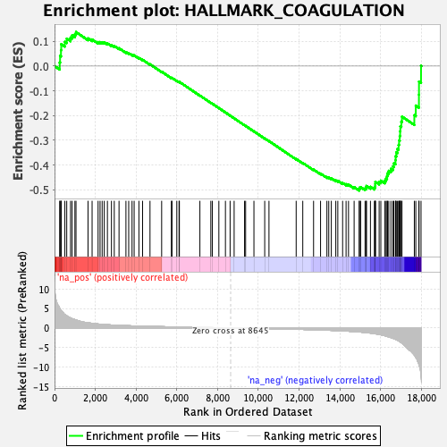
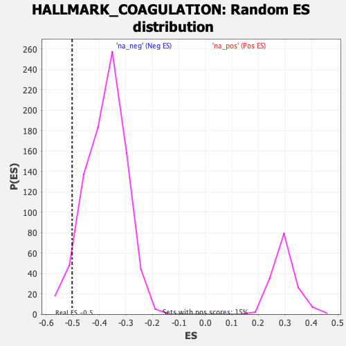

| | | Dataset | DE_genes2 |
| Phenotype | NoPhenotypeAvailable |
| Upregulated in class | na_neg |
| GeneSet | HALLMARK_COAGULATION |
| Enrichment Score (ES) | -0.5027293 |
| Normalized Enrichment Score (NES) | -1.332583 |
| Nominal p-value | 0.047058824 |
| FDR q-value | 0.14716248 |
| FWER p-Value | 0.851 |
Table: GSEA Results Summary

Fig 1: Enrichment plot: HALLMARK_COAGULATION
Profile of the Running ES Score & Positions of GeneSet Members on the Rank Ordered List
| SYMBOL | RANK IN GENE LIST | RANK METRIC SCORE | RUNNING ES | CORE ENRICHMENT | | 1 | PROC | 254 | 5.044 | 0.0143 | No |
| 2 | F3 | 272 | 4.873 | 0.0409 | No |
| 3 | GDA | 316 | 4.520 | 0.0641 | No |
| 4 | OLR1 | 329 | 4.437 | 0.0885 | No |
| 5 | CFD | 507 | 3.446 | 0.0981 | No |
| 6 | PROS1 | 599 | 3.135 | 0.1108 | No |
| 7 | RAPGEF3 | 785 | 2.559 | 0.1149 | No |
| 8 | C3 | 863 | 2.398 | 0.1242 | No |
| 9 | MMP15 | 1000 | 2.142 | 0.1287 | No |
| 10 | CD9 | 1054 | 2.045 | 0.1373 | No |
| 11 | SERPINE1 | 1644 | 1.317 | 0.1119 | No |
| 12 | DUSP14 | 1844 | 1.174 | 0.1074 | No |
| 13 | APOC1 | 2138 | 1.008 | 0.0967 | No |
| 14 | CLU | 2235 | 0.958 | 0.0968 | No |
| 15 | PRSS23 | 2338 | 0.913 | 0.0963 | No |
| 16 | PLAT | 2441 | 0.870 | 0.0955 | No |
| 17 | RABIF | 2596 | 0.820 | 0.0915 | No |
| 18 | LGMN | 2794 | 0.757 | 0.0848 | No |
| 19 | ANXA1 | 2932 | 0.719 | 0.0813 | No |
| 20 | MMP11 | 3166 | 0.658 | 0.0720 | No |
| 21 | BMP1 | 3505 | 0.588 | 0.0564 | No |
| 22 | ADAM9 | 3641 | 0.562 | 0.0521 | No |
| 23 | CFH | 3805 | 0.529 | 0.0460 | No |
| 24 | WDR1 | 3908 | 0.512 | 0.0432 | No |
| 25 | VWF | 4141 | 0.475 | 0.0329 | No |
| 26 | PEF1 | 4322 | 0.449 | 0.0254 | No |
| 27 | ARF4 | 4686 | 0.394 | 0.0074 | No |
| 28 | FURIN | 5258 | 0.327 | -0.0226 | No |
| 29 | GNB2 | 5736 | 0.276 | -0.0477 | No |
| 30 | CASP9 | 5765 | 0.272 | -0.0477 | No |
| 31 | DPP4 | 6002 | 0.250 | -0.0595 | No |
| 32 | C8G | 6112 | 0.239 | -0.0642 | No |
| 33 | CTSV | 6129 | 0.237 | -0.0638 | No |
| 34 | SIRT2 | 7135 | 0.144 | -0.1190 | No |
| 35 | RAC1 | 7672 | 0.093 | -0.1484 | No |
| 36 | CPQ | 7748 | 0.085 | -0.1521 | No |
| 37 | LTA4H | 8066 | 0.055 | -0.1695 | No |
| 38 | CSRP1 | 8389 | 0.022 | -0.1874 | No |
| 39 | ISCU | 8618 | 0.003 | -0.2001 | No |
| 40 | CRIP2 | 8816 | -0.017 | -0.2110 | No |
| 41 | MSRB2 | 9327 | -0.062 | -0.2391 | No |
| 42 | GNG12 | 9380 | -0.068 | -0.2416 | No |
| 43 | F8 | 9788 | -0.107 | -0.2637 | No |
| 44 | CAPN2 | 10317 | -0.162 | -0.2923 | No |
| 45 | SERPINA1 | 10526 | -0.183 | -0.3028 | No |
| 46 | SPARC | 11861 | -0.342 | -0.3753 | No |
| 47 | PREP | 12185 | -0.386 | -0.3912 | No |
| 48 | LAMP2 | 12715 | -0.466 | -0.4181 | No |
| 49 | F12 | 13058 | -0.524 | -0.4342 | No |
| 50 | PLEK | 13370 | -0.584 | -0.4482 | No |
| 51 | GSN | 13461 | -0.602 | -0.4499 | No |
| 52 | FYN | 13587 | -0.625 | -0.4533 | No |
| 53 | FBN1 | 13806 | -0.671 | -0.4617 | No |
| 54 | USP11 | 13905 | -0.694 | -0.4632 | No |
| 55 | C2 | 14141 | -0.750 | -0.4721 | No |
| 56 | CTSH | 14311 | -0.801 | -0.4770 | No |
| 57 | CTSB | 14430 | -0.840 | -0.4788 | No |
| 58 | MAFF | 14706 | -0.939 | -0.4889 | No |
| 59 | CFB | 14955 | -1.032 | -0.4969 | Yes |
| 60 | CTSO | 14966 | -1.037 | -0.4916 | Yes |
| 61 | CTSK | 15027 | -1.064 | -0.4889 | Yes |
| 62 | SH2B2 | 15242 | -1.170 | -0.4942 | Yes |
| 63 | MMP1 | 15303 | -1.209 | -0.4908 | Yes |
| 64 | ANG | 15309 | -1.214 | -0.4842 | Yes |
| 65 | KLF7 | 15507 | -1.321 | -0.4877 | Yes |
| 66 | TIMP1 | 15700 | -1.452 | -0.4902 | Yes |
| 67 | PLAU | 15741 | -1.493 | -0.4840 | Yes |
| 68 | S100A13 | 15744 | -1.495 | -0.4757 | Yes |
| 69 | MMP3 | 15750 | -1.498 | -0.4675 | Yes |
| 70 | MST1 | 15934 | -1.678 | -0.4682 | Yes |
| 71 | LRP1 | 16017 | -1.762 | -0.4628 | Yes |
| 72 | THBS1 | 16209 | -1.985 | -0.4622 | Yes |
| 73 | ITGB3 | 16273 | -2.100 | -0.4539 | Yes |
| 74 | TIMP3 | 16320 | -2.178 | -0.4441 | Yes |
| 75 | ACOX2 | 16346 | -2.218 | -0.4330 | Yes |
| 76 | PDGFB | 16406 | -2.320 | -0.4232 | Yes |
| 77 | C1S | 16512 | -2.480 | -0.4150 | Yes |
| 78 | F2RL2 | 16611 | -2.655 | -0.4055 | Yes |
| 79 | CAPN5 | 16659 | -2.757 | -0.3925 | Yes |
| 80 | ITGA2 | 16737 | -2.927 | -0.3803 | Yes |
| 81 | MMP14 | 16742 | -2.932 | -0.3639 | Yes |
| 82 | S100A1 | 16775 | -2.995 | -0.3488 | Yes |
| 83 | DUSP6 | 16833 | -3.121 | -0.3343 | Yes |
| 84 | TFPI2 | 16889 | -3.325 | -0.3186 | Yes |
| 85 | HTRA1 | 16912 | -3.408 | -0.3005 | Yes |
| 86 | THBD | 16945 | -3.522 | -0.2824 | Yes |
| 87 | MMP2 | 16964 | -3.582 | -0.2631 | Yes |
| 88 | FN1 | 16974 | -3.604 | -0.2433 | Yes |
| 89 | PECAM1 | 17023 | -3.792 | -0.2245 | Yes |
| 90 | C1R | 17054 | -3.921 | -0.2040 | Yes |
| 91 | MMP9 | 17661 | -6.965 | -0.1985 | Yes |
| 92 | P2RY1 | 17733 | -7.564 | -0.1597 | Yes |
| 93 | CFI | 17887 | -9.311 | -0.1156 | Yes |
| 94 | COMP | 17890 | -9.361 | -0.0627 | Yes |
| 95 | A2M | 17990 | -12.301 | 0.0013 | Yes |
Table: GSEA details [plain text format]

Fig 2: HALLMARK_COAGULATION: Random ES distribution
Gene set null distribution of ES for HALLMARK_COAGULATION